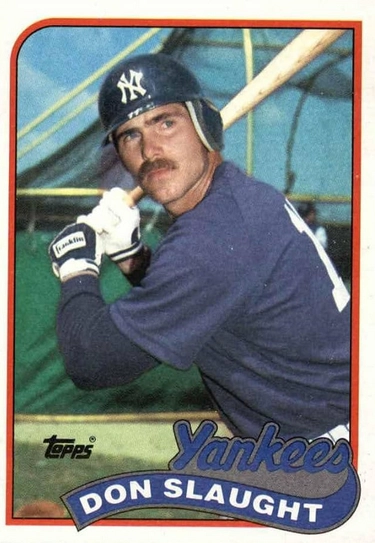

Don Slaught
Career Highlights & Facts
(Facts are AI-generated and may require verification)
- Primary defensive role involved managing the pitching staff from behind the plate.
- Known for a reliable bat that maintained a career batting average of .283.
- Earned the nickname 'Sluggo' during a professional career that spanned 16 seasons.
Would you like to find out more about Don Slaught?
Player Biography
Don Slaught January 4, 2012 / in BioProject - Person / by admin This bio is not assigned. Want to write a SABR bio? Contact bioproject@sabr.org . No items found Full Name Donald Martin Slaught Born September 11, 1958 at Long Beach, CA (USA) Stats Baseball Reference Retrosheet If you can help us improve this player’s biography, contact us . Tags None Share this entry Share on Facebook Share on X Share on LinkedIn Share on Reddit Share by Mail
Wikipedia Summary:
Donald Martin Slaught, nicknamed "Sluggo", is an American former professional baseball catcher. He played in Major League Baseball (MLB) from 1982 through 1997 for the Kansas City Royals, Texas Rangers, New York Yankees, Pittsburgh Pirates, California Angels, Chicago White Sox, and San Diego Padres.
Career Totals
| WAR | AB | H | HR | BA | R | RBI | SB | OBP | SLG | OPS | OPS+ |
|---|---|---|---|---|---|---|---|---|---|---|---|
| 19.4 | 4063 | 1151 | 77 | .283 | 415 | 476 | 18 | .338 | .412 | .749 | 104 |
Statistics via Baseball-Reference.com
The Original Clue